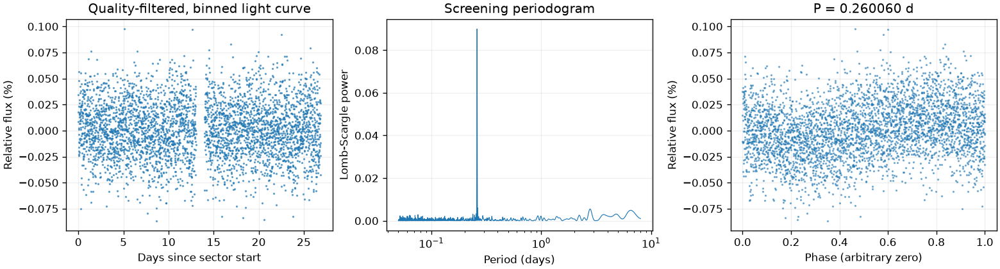
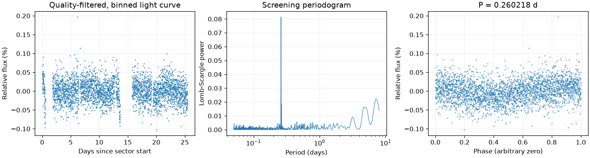
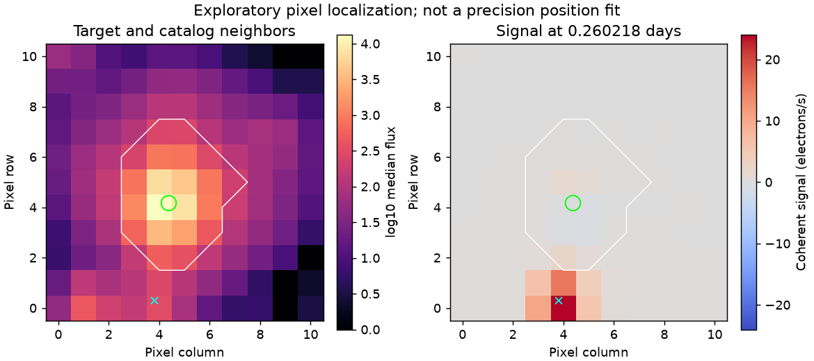

← 返回全部结果
真实邻星污染案例
LS 候选：0.26006038 天；BLS 候选：0.26010856 天。

LS 候选：3.56925912 天；BLS 候选：0.26063735 天。
LS 候选：0.26021825 天；BLS 候选：0.51989653 天。

结果：标为疑似邻星污染。对应邻星：GSC 04448-01982。这是以前看过的开发案例，不是独立验证。

完整机器结果与输入记录